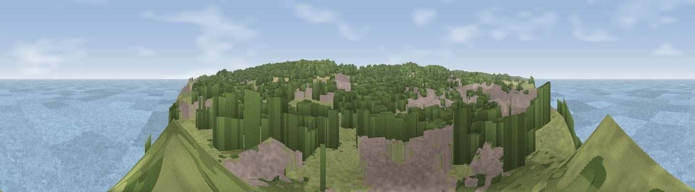
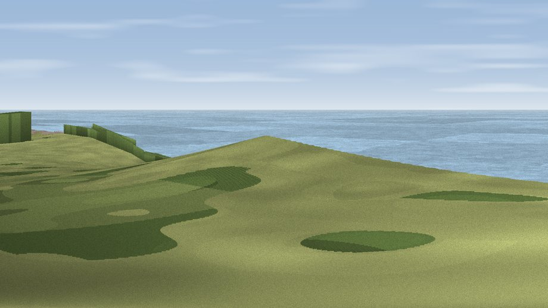
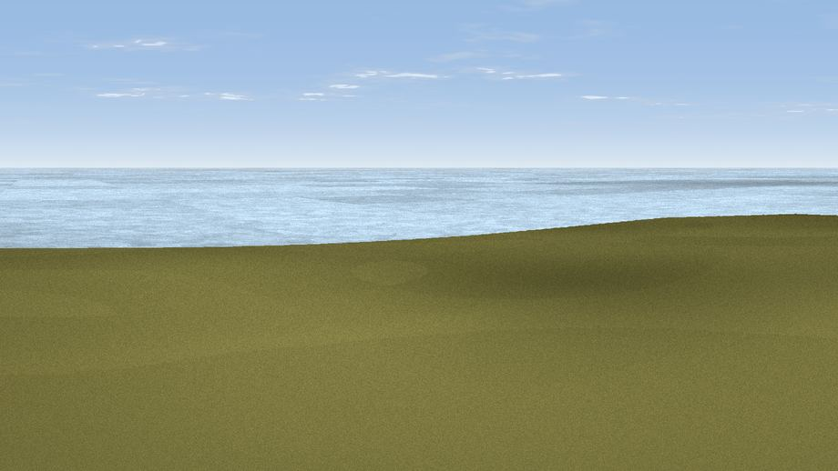

Beeston Hill
#7656 in England · top 4% of its area beats it · near Beeston Regis · footpathWhere it is
The exact computed spot (TG 16775 43275). Green wedges show where the rendered camera views below look. Click the marker for map links.
Public access: a public right of way passes within 27 m of this spot. Computed from Natural England's CRoW access layer and OpenStreetMap rights of way — not the legal definitive map. Always verify locally.
The view, rendered

A 360° render of this exact spot computed from the terrain model, tree cover and land cover — summer colours, afternoon light, calibrated against photographs of famous viewpoints. Real trees, hedges and buildings will differ in detail.
Through the camera


Rendered views along the best directions of this panorama.
The panorama
Grey silhouette: terrain skyline in each direction (720 bearings, Earth curvature and refraction included). Dashed green: skyline with trees (+15 m) and buildings (+8 m) as obstacles. Blue strip: how far the ground is visible on each bearing.
Where the view opens
Wedge length = distance to the farthest visible ground on that bearing (vegetation-aware). Rings at 10, 25 and 50 km.
What fills the view
53% water · 18% grassland · 14% built-up · 14% woodland · 1% cropland
Angular shares of the visible panorama (visual magnitude), not map area. Landscape diversity 0.54 (0–1 Shannon).
Key numbers
More beautiful places nearby
The staircase of upgrades: each row has a higher view potential than everything closer. Driving times are estimates from straight-line distance, calibrated against real road routing — check an actual route before setting out.
| Place | Direction | Drive | Score |
|---|---|---|---|
| Viewpoint near Weybourne | W · 7 km | ~14 min | 68.3 |
| Viewpoint near Claxby | WNW · 117 km | ~142 min | 71.5 |
| Viewpoint near Bempton | NW · 163 km | ~185 min | 72.8 |
| Viewpoint near Speeton | NW · 165 km | ~186 min | 74.4 |
| Viewpoint near Speeton | NW · 166 km | ~188 min | 80.0 |
| Olivers Mount | NW · 182 km | ~202 min | 80.3 |
| Viewpoint near Ravenscar | NW · 197 km | ~215 min | 82.7 |
| Viewpoint near Ravenscar | NW · 198 km | ~216 min | 87.3 |
52.94306, 1.22481 · source: osm viewpoint · position refined by local search. Computed location — check access rights before visiting.